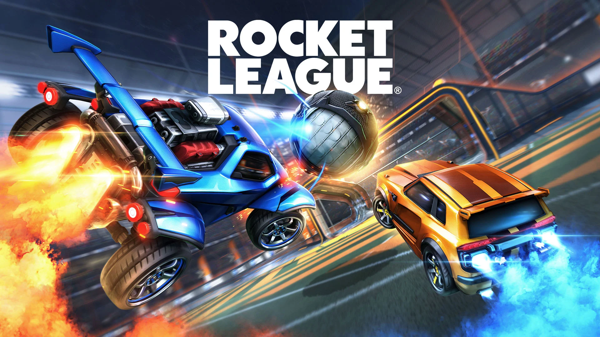
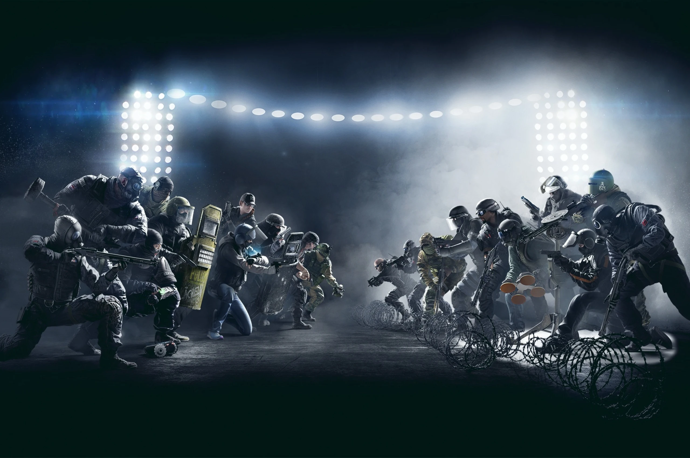
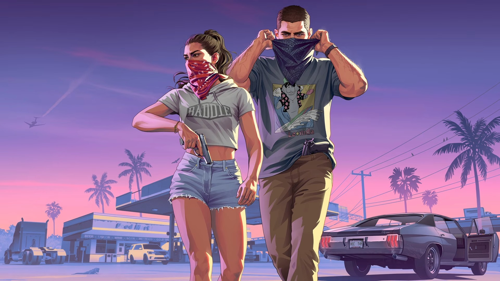
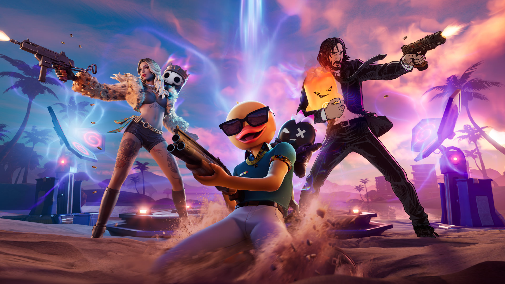

latest updates from the Esports World

Rocket League fortsätter att locka spelare med sin unika blandning av fotboll och bilar. Nya turneringar och utmaningar ger spelarna fler möjligheter att tävla och visa upp sina färdigheter. Konkurrensen blir allt hårdare och jakten på Grand Champion fortsätter.

Rainbow Six Siege fortsätter att utvecklas med nya uppdateringar, operatörer och balanseringar. Spelare måste samarbeta, planera sina attacker och använda rätt strategier för att vinna. Varje match kräver precision och kommunikation.

Intresset för GTA 6 fortsätter att växa bland spelare världen över. Många ser fram emot att utforska Vice City, testa nya fordon och upptäcka spelets möjligheter. Förväntningarna på Rockstars nästa stora spelsläpp är enorma.

Fortnite fortsätter att förändras med nya säsonger, skins och samarbeten. Spelare får regelbundet nytt innehåll att upptäcka samtidigt som nya vapen och funktioner förändrar spelets dynamik. Battle Royale fortsätter att vara populärt bland spelare i alla åldrar.